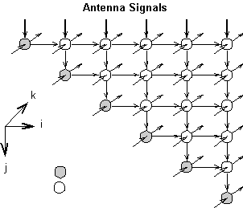

At Delft University of Technology, in the Circuits and Systems group,
research is carried out to automatically compile Nested-Loop Programs (NLP)
written in Matlab into a process network model. The NLPs written in Matlab
use the imperative model of computation. The compiled process networks
however describe the same NLPs in terms of a concurrency model. These models
seem more suited for system-level design of silicon systems.
Many well-know signal-processing applications can be written as NLPs. Having a compiler that automatically compiles these NLPs to process network models provides us with a large collection of applications described in the a concurrency model. As the process network model, they use Kahn Process Networks [Kahn, 1974] in which each process is internally structured in a particular way. Each process consists of a set of functions, a controller and state. Such process is called a Stream-Based Function process or SBF-process as described in [Kienhuis, 1999].
In this web page, we combine the compilation work done at Delft University
with the simulation work done at the University of California at Berkeley.
The compiled NLPs can be simulated in the PN-domain [Goel, 1998] of the
Ptolemy II framework [Davis, 1998] developed at the University of California
at Berkeley. The Ptolemy II framework is an advanced heterogeneous modeling
environment based on Java and it allows us to describe a particular application
as a Java Applet that can run on any web browser.
%parameter K 100 1000; %parameter N 8 16; %%%%%%%%%%%%%%%%%%%%%%%%%%%%%%%%%%%%%%%%%%%%%%%%%%%%%%%%%%%%%%%%%%%%%%% %% %% %% Nested Loop Program in Matlab %% %% %% %%%%%%%%%%%%%%%%%%%%%%%%%%%%%%%%%%%%%%%%%%%%%%%%%%%%%%%%%%%%%%%%%%%%%%% %% Calculate K iterations of a QR-update for k = 1:1:K, for j = 1:1:N, [r(j,j), x(k,j), t ] = Vectorize( r(j,j), x(k,j) ); for i = j+1:1:N, [r(j,i), x(k,i), t] = Rotate( r(j,i), x(k,i), t ); end end end %% After K iterations, collect the values of the R Matrix for j = 1:1:N, for i = j:1:N, [ Sink(j,i) ] = _WriteMatrix_Rout( r(j,i) ); end end
The QR algorithm has a dependence graph representation. Instead of showing
the complete dependence graph of the QR algorithm, we show only one k-plane,
representing a single QR update. The complete DG would consist of K
of these planes. Each and every k-plane depends on its predecessor.
Each node in the DG represents a function from the QR algorithm: a gray
node represents the function Vectorize
and a white node represents the function Rotate.
At the side of the triangle at the top of the figure, data (i.e., the X
data) is arriving from external sources -- say sensors of an N-antenna
array (in this case N=6) -- that propagates
downwards through the plane. The values of 21 r variables (i.e.,
elements of the R matrix in the Matlab
program) produced by the previous plane are updated using the functions
Rotate
and Vectorize. To rotate, each Rotate
function needs to have an angle theta calculated
by the function
Vectorize on the diagonal
of the triangle.

The dependence graph representation of the QR algorithm reveals features
like regularity and locality. Unlike the Matlab description, it also reveals
a high level of concurrency. These features -- regularity, locality, and
concurrency -- are typical for many NLP algorithms. The dependence graph
can be written down as a so-called reduced dataflow graph. The reduced
dataflow graph for our QR algorithm is given below. To obtain a process
network model, we replace each node in the reduced dataflow graph with
a process and each edge with an unbounded FIFO buffers. Each process in
the network description is described in terms of a set of functions, a
controller and state.
The steps involved in the compilation from a NLP in Matlab to a process
network are described in Rypkema et al. [1998]. The current status of the
compilation from NLPs to process network models is that proof of concept
is done for a small number of problems. The compiler tool-chain needs to
be generalized such that process network models are generated for a much
large class of NLPs. Also, the output generated by the compilation tool-chain
is currently in C++. As a consequence, to make the example of the QR algorithm
run in the Ptolemy II framework, we manually had to create the Java objects.
In the we select K=10 and N=6, we must find the following R matrix in order to be functionally correct
# name: Rout # type: matrix # rows: 6 # columns: 6 270.843 206.234 60.482 -39.318 -89.100 -38.568 0.000 144.933 181.192 172.919 104.333 10.488 0.000 0.000 32.964 18.280 10.909 9.170 0.000 0.000 0.000 24.739 7.446 7.208 0.000 0.000 0.000 0.000 20.308 11.206 0.000 0.000 0.000 0.000 0.000 8.535
Gilles Kahn, "The semantics of a simple language for parallel programming". In proc. of the IFIP Congress 74, North-Holland Publishing Co., 1974
A.C.J. Kienhuis, "Design Space Exploration of Stream-based Dataflow Architectures: Methods and Tools", Ph.D. Thesis, Delft University of Technology, The Netherlands, January 1999.
J. Davis, R. Galicia, M. Goel, C. Hylands, E.A. Lee, J. Liu, X. Liu, L. Muliadi, S. Neuendorffer, J. Reekie, N. Smyth, J. Tsay and Y. Xiong, ``Heterogeneous Concurrent Modeling and Design in Java'' Technical Report UCB/ERL No. M98/72, University of California, Berkeley, CA 94720, November 23, 1998.
M. Goel, ``Process
Networks in Ptolemy II'' MS Report, ERL Technical Report UCB/ERL No.
M98/69, University of California, Berkeley, CA 94720, December 16, 1998.
UNIVERSITY OF CALIFORNIA
Department of Electrical Engineering and Computer Sciences